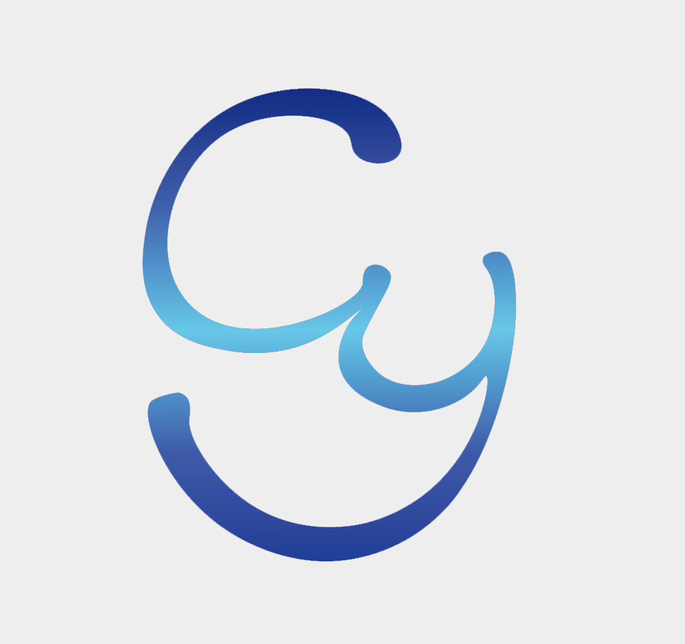

我最初选择计算机专业是出于相当功利的目的，觉得掌握了过硬的技术就能过上想要是生活。但在经历现实的打击和经过对人生价值进行相当长时间的思考后，我改变了过去的想法。
现在年轻人之所以对未来感到痛苦和迷茫，究其本质，我不敢说；但本质之外有一条重要的原因，便是人同自己类本质的异化。
计算机专业学生和其他工科专业学生一样，逃脱不了这种异化。想要减轻异化对自己的影响，只能通过改变自己实现。
现在，我几乎依靠兴趣驱动学习这门学科。
计算机专业和软工不同，除了要掌握编程，更要掌握程序背后的算法原理，和支持这套规则运行的硬件背后的原理。对于后者，我只能做到浅尝辄止，不求甚解，过多投入精力到那些东西上去只会让我变得烦躁。而算法对于我来说，也是一种很难突破的存在，我实在不能把精力投入到征服这座大山上。
而对于我感兴趣的领域——视觉方面（姑且这么称呼，因为我离计算机图形学入门都还有很长的一段路要走）投入再多的精力在我看来也不为过。因为我将这当成了人生的目的来看待，那么即使我被其所困，也很难丧失本心，自然也就能避免被我学习的知识和创造的劳动所异化。
我的理想就是将自己的劳动与兴趣结合起来，摆脱当今快节奏而充满压抑的时代风气，度过朴实但快乐的一生。我相信也只有包罗万象的计算机专业能够给予我选择这样发展的机回。
我很期待人工智能发展到能够与人类社会深度融合的一天，把不想做的交给人工智能去应付，自己则能够遵从内心支配自己的精力，在我看来，人类如此便能实现自我解放。
讽刺的是，身为计算机专业的学生，我无法投入到这项事业中去，只能将麻烦丢给同专业的人们了。
NoneCopyright © 2022 GanyGao_o 没有版权（悲）
"GanyGao_o"、"GanyGao"以及 GY 徽标并没有被注册过，不受任何国家或地区法律保护（大悲）
下北沢警察署备案号:1145141919810